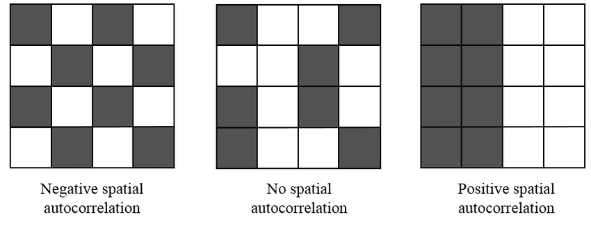
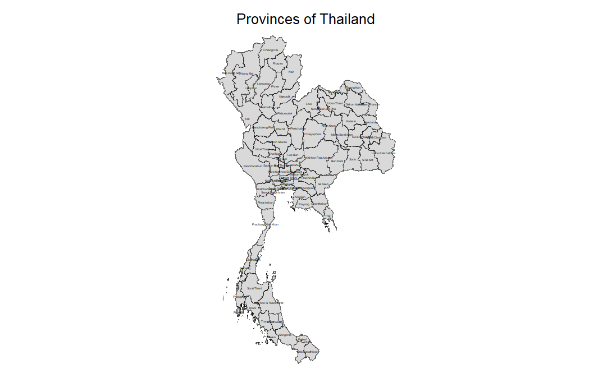
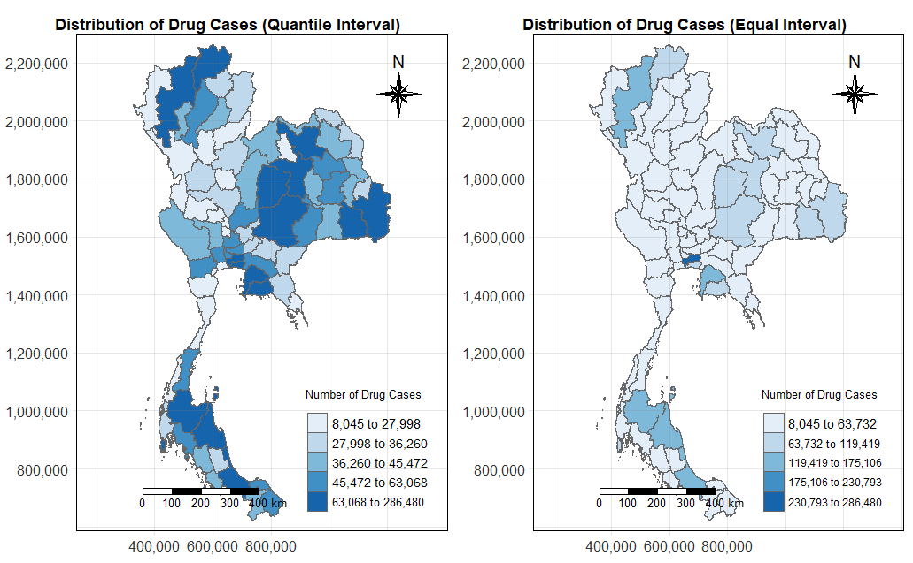
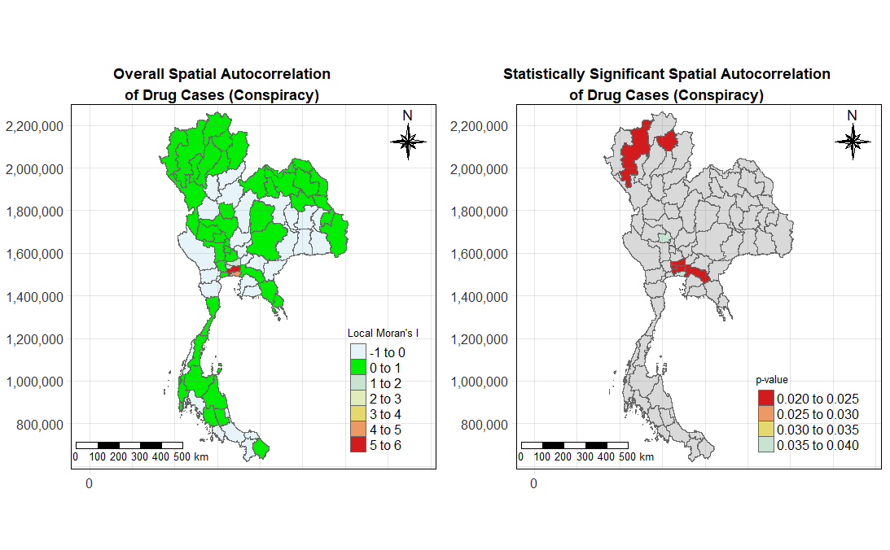

pacman::p_load(sf, st, tidyverse, lubridate, sfdep, tmap, ggplot2, knitr, Kendall)Take-home Exercise 2 - Part 1
Harnessing Geospatial Methods to Analyse Drug Abuse Patterns in Thailand
1. Setting the Scene: Drug Abuse in Thailand
In 2022, 567,609 drug users in ASEAN were treated, in which Thailand was found to have the highest number of drug users requiring treatment among ASEAN countries, followed by Malaysia, Indonesia, Laos, the Philippines, and Singapore. (Kahanto M., et al, 2022) Drug abuse is a significant social issue in Thailand, with profound health, financial, and societal implications. Positioned near the Golden Triangle—one of the largest drug production areas in Asia—Thailand faces ongoing challenges due to its geographical proximity and extensive transportation routes, which facilitate drug trafficking. Within Thailand, drug abuse is particularly prevalent among the youth, with approximately 2.7 million young people involved. Of those aged 15–19, around 300,000 are in need of drug treatment, and vocational students are disproportionately affected compared to their peers in secondary school.
This underscores the importance of drug treatment in addressing the complex problem of substance abuse and reduces the societal costs associated with drug abuse, such as healthcare expenses, lost productivity, and crime. Hence, to better allocate resources and develop targeted interventions, it is crucial to understand where drug abuse is most concentrated and how it spreads geographically. This is where geospatial analysis becomes essential.
In this exercise, I will utilise geospatial analysis methods to explore the province-level dynamics of drug abuse in Thailand. This will involve preparing a study area layer as sf polygon features at the province level, including Bangkok, and creating a drug abuse indicators layer within this study area. Using these extracted data layers, I will conduct global spatial autocorrelation analysis using sfdep methods, followed by local spatial autocorrelation analysis. Finally, I will describe the spatial patterns revealed by determining whether key indicators are spatially dependent, and identifying trends of clusters, outliers and hotspots over time.
This take-home exercise consists of two parts:
2. Methods Used
2.1 Spatial Autocorrelation
This quote from Tobler (1970) highlights the essence of spatial autocorrelation, emphasising the importance of studying how values of the same variable are interconnected across space. By examining spatial dependence, we can better understand local and global patterns and variations. This law suggests that phenomena that are geographically close to each other are more likely to be similar or have some kind of spatial relationship compared to phenomena that are farther apart.
It is also important to note that spatial structure and spatial autocorrelation are inherently interconnected (Tiefelsdorf, 1998):
Spatial structure encompasses all the connections through which the autocorrelated phenomenon spreads.
Without a significant autocorrelated process, spatial structure cannot be empirically observed.
Thus, the observed spatial distribution is regarded as a reflection of the underlying spatial process. When spatial autocorrelation is present, the value of a variable at a given observation is connected to the values of that same variable at neighbouring observations:
Configuration of areas showing different types of autocorrelation (Nguyen K. et al., 2022)

Positive Spatial Autocorrelation occurs when similar values of the variable cluster geographically.
Negative Spatial Autocorrelation arises when dissimilar values are geographically close, indicating that nearby locations tend to differ more than those that are farther apart. This situation often reflects spatial competition.
In the absence of spatial autocorrelation, the distribution of observations can be considered random.
2.2 Cluster and Outlier Analysis
Cluster and Outlier Analysis can be effectively applied using Local Moran’s I, Local Geary’s C, Moran scatterplots, and LISA Cluster Maps to identify and understand spatial patterns in data. Here’s how each of these methods can be utilised
2.2.1 Local Moran’s I and Local Geary’s C
Local Moran’s I: This statistic assesses local spatial autocorrelation by measuring the degree of similarity of a location’s value to those of its neighbours. It identifies clusters of high or low values (hotspots and cold spots) and outliers (areas where a value is significantly different from its neighbours). By calculating Local Moran’s I for each location, we can highlight areas with significant spatial dependence, helping to identify regions where interventions may be needed.
Local Geary’s C: Similar to Local Moran’s I, Local Geary’s C focuses on differences rather than similarities. It quantifies the spatial variation between nearby locations, emphasising dissimilarity. This method can help detect spatial competition, where nearby areas have contrasting values. By using Local Geary’s C, we can uncover regions that may experience conflicting trends or behaviours, providing insights into localised dynamics.
2.2.2 Moran Scatterplot
The Moran scatterplot visualises the relationship between the value of a variable at a location and the average value of its neighbours. We can plot scatterplot to represent a location, with the x-axis showing the local mean of neighbouring values and the y-axis showing the local value.
Plots like this can help us in identifying clusters (high-high or low-low) and outliers (high-low or low-high). The scatterplot can reveal spatial patterns that are not immediately obvious.
2.2.3 LISA Cluster Map
A LISA Cluster Map visually represents the results of Local Indicators of Spatial Association, indicating the spatial clusters of similar values (hotspots) and outliers.
I will use these maps to quickly identify regions of interest such that areas identified as hotspots will be marked in red to signify high values surrounded by high values, while cold spots will be marked in blue for low values surrounded by low values. Outliers will be highlighted in contrasting colours.
2.3 Emerging Hot Spot Analysis
There are different methods for analysing spatial patterns and detecting hotspots including spatial autocorrelation and cluster analysis. Emerging Hot Spot Analysis (EHSA) is a specific spatio-temporal method used to examine hotspots over a designated observation period. It integrates two well-known techniques: the traditional Getis-Ord Gi* statistic for hotspot detection and the Mann-Kendall test for assessing monotonic trends over time. The main goal of EHSA is to analyse how hot and cold spots change over time, focusing on whether these areas are increasing in intensity, decreasing, or remaining constant.
3. Importing Packages into R
Let’s load all the required packages for conducting our analysis.
sf: provides a standardised way to encode spatial vector data in R environment, facilitating spatial data operations and analysis.st: create simple features from numeric vectors, matrices, or lists, enabling the representation and manipulation of spatial structures in R.tidyverse: a collection of R packages designed for data science. All packages share an underlying design philosophy, grammar, and data structure.sfdep: for computing spatial weights, global and local spatial autocorrelation statistics. Offers a more streamlined approach with sf objects.tmap: for creating static and interactive visualisations and maps.ggplot2: for creating advanced visualisations, graphics and maps using the Grammar of Graphics.knitr: for dynamic report generation in R using Literate Programming techniques.Kendall: for computing the Kendall rank correlation and Mann-Kendall trend test
4. Importing Datasets into R
We will be leveraging two datasets in this exercise. The first dataset to be used is Thailand’s provincial boundary is tha_admbnda_adm1_rtsd_20220121 which exists in ESRI .shp format and is based on the Thailand geographic coordinate system. This dataset is extracted from Thailand - Subnational Administrative Boundaries via the HDX portal.
The second dataset thai_drug_offenses_2017_2022 consists of aspatial data in a CSV format that contains reported cases of drug offences in Thailand from 2017 to 2022. The dataset is extracted from Thailand Drug Offenses [2017-2022] in Kaggle.
4.1 Importing Geospatial Data
In this section, st_read() of sf package will be used to import tha_admbnda_adm1_rtsd_20220121 dataset into the R environment. The st_transform() function below converts the CRS of the sf object to EPSG:32647 which maps to Thailand’s UTM zone, particularly for Western/Central parts.
thai_boundary <- st_read(dsn = "data/geospatial",layer = "tha_admbnda_adm1_rtsd_20220121") %>% st_transform(crs = 32647)Reading layer `tha_admbnda_adm1_rtsd_20220121' from data source
`C:\SamanthaxFoo\IS415-GAA\Take-home_Ex\Take-home_Ex2\data\geospatial'
using driver `ESRI Shapefile'
Simple feature collection with 77 features and 16 fields
Geometry type: MULTIPOLYGON
Dimension: XY
Bounding box: xmin: 97.34336 ymin: 5.613038 xmax: 105.637 ymax: 20.46507
Geodetic CRS: WGS 84# Inspect data
glimpse(thai_boundary)Rows: 77
Columns: 17
$ Shape_Leng <dbl> 2.417227, 1.695100, 1.251111, 1.884945, 3.041716, 1.739908,…
$ Shape_Area <dbl> 0.13133873, 0.07926199, 0.05323766, 0.12698345, 0.21393797,…
$ ADM1_EN <chr> "Bangkok", "Samut Prakan", "Nonthaburi", "Pathum Thani", "P…
$ ADM1_TH <chr> "กรุงเทพมหานคร", "สมุทรปราการ", "นนทบุรี", "ปทุมธานี", "พระนครศรีอ…
$ ADM1_PCODE <chr> "TH10", "TH11", "TH12", "TH13", "TH14", "TH15", "TH16", "TH…
$ ADM1_REF <chr> NA, NA, NA, NA, NA, NA, NA, NA, NA, NA, NA, NA, NA, NA, NA,…
$ ADM1ALT1EN <chr> NA, NA, NA, NA, NA, NA, NA, NA, NA, NA, NA, NA, NA, NA, NA,…
$ ADM1ALT2EN <chr> NA, NA, NA, NA, NA, NA, NA, NA, NA, NA, NA, NA, NA, NA, NA,…
$ ADM1ALT1TH <chr> NA, NA, NA, NA, NA, NA, NA, NA, NA, NA, NA, NA, NA, NA, NA,…
$ ADM1ALT2TH <chr> NA, NA, NA, NA, NA, NA, NA, NA, NA, NA, NA, NA, NA, NA, NA,…
$ ADM0_EN <chr> "Thailand", "Thailand", "Thailand", "Thailand", "Thailand",…
$ ADM0_TH <chr> "ประเทศไทย", "ประเทศไทย", "ประเทศไทย", "ประเทศไทย", "ประเทศ…
$ ADM0_PCODE <chr> "TH", "TH", "TH", "TH", "TH", "TH", "TH", "TH", "TH", "TH",…
$ date <date> 2019-02-18, 2019-02-18, 2019-02-18, 2019-02-18, 2019-02-18…
$ validOn <date> 2022-01-22, 2022-01-22, 2022-01-22, 2022-01-22, 2022-01-22…
$ validTo <date> -001-11-30, -001-11-30, -001-11-30, -001-11-30, -001-11-30…
$ geometry <MULTIPOLYGON [m]> MULTIPOLYGON (((674339.8 15..., MULTIPOLYGON (…Let’s verify the coordinate reference systems of the thai_boundary object to ensure the assignment of the correct CRS value.
st_crs(thai_boundary)Coordinate Reference System:
User input: EPSG:32647
wkt:
PROJCRS["WGS 84 / UTM zone 47N",
BASEGEOGCRS["WGS 84",
ENSEMBLE["World Geodetic System 1984 ensemble",
MEMBER["World Geodetic System 1984 (Transit)"],
MEMBER["World Geodetic System 1984 (G730)"],
MEMBER["World Geodetic System 1984 (G873)"],
MEMBER["World Geodetic System 1984 (G1150)"],
MEMBER["World Geodetic System 1984 (G1674)"],
MEMBER["World Geodetic System 1984 (G1762)"],
MEMBER["World Geodetic System 1984 (G2139)"],
ELLIPSOID["WGS 84",6378137,298.257223563,
LENGTHUNIT["metre",1]],
ENSEMBLEACCURACY[2.0]],
PRIMEM["Greenwich",0,
ANGLEUNIT["degree",0.0174532925199433]],
ID["EPSG",4326]],
CONVERSION["UTM zone 47N",
METHOD["Transverse Mercator",
ID["EPSG",9807]],
PARAMETER["Latitude of natural origin",0,
ANGLEUNIT["degree",0.0174532925199433],
ID["EPSG",8801]],
PARAMETER["Longitude of natural origin",99,
ANGLEUNIT["degree",0.0174532925199433],
ID["EPSG",8802]],
PARAMETER["Scale factor at natural origin",0.9996,
SCALEUNIT["unity",1],
ID["EPSG",8805]],
PARAMETER["False easting",500000,
LENGTHUNIT["metre",1],
ID["EPSG",8806]],
PARAMETER["False northing",0,
LENGTHUNIT["metre",1],
ID["EPSG",8807]]],
CS[Cartesian,2],
AXIS["(E)",east,
ORDER[1],
LENGTHUNIT["metre",1]],
AXIS["(N)",north,
ORDER[2],
LENGTHUNIT["metre",1]],
USAGE[
SCOPE["Navigation and medium accuracy spatial referencing."],
AREA["Between 96°E and 102°E, northern hemisphere between equator and 84°N, onshore and offshore. China. Indonesia. Laos. Malaysia - West Malaysia. Mongolia. Myanmar (Burma). Russian Federation. Thailand."],
BBOX[0,96,84,102]],
ID["EPSG",32647]]Before we delve into further data analysis, it is crucial that we first understand the levels of administration that makes up Thailand today. In particular, Thailand has 4 levels of administration, i.e. level 0 (country), 1 (province), 2 (district), and 3 (sub-district) boundaries. Thailand comprises 76 provinces (known as จังหวัด in Thai or changwat in English), along with one special administrative area, Bangkok, the capital.
- These provinces function as the main local government units and possess legal personhood.
- Each province is subdivided into amphoe (districts), which are further broken down into tambon (sub-districts), representing the next tier of local governance.
- For this analysis, I will only focus on the province administration level.
We can visualise the structure of our geospatial object as such.
tmap_mode("plot")
# Plot the provinces of Thailand with labels
tm_shape(thai_boundary) +
tm_borders(col = "black", lwd = 0.3, alpha = 0.6) +
tm_polygons()+
tm_layout(main.title = "Provinces of Thailand",main.title.size = 1,
main.title.position = "center", legend.show = FALSE,
frame = FALSE ) +
tm_text("ADM1_EN", size = 0.2)
4.2 Importing Aspatial Data
In this section, read_csv() of sf package will be used to import the csv file into the R environment. The output is a R dataframe class containing 5 unique columns of drug offences in Thailand from 2017 - 2022.
drug_cases <- read_csv("data/aspatial/thai_drug_offenses_2017_2022.csv") Rows: 7392 Columns: 5
── Column specification ────────────────────────────────────────────────────────
Delimiter: ","
chr (3): types_of_drug_offenses, province_th, province_en
dbl (2): fiscal_year, no_cases
ℹ Use `spec()` to retrieve the full column specification for this data.
ℹ Specify the column types or set `show_col_types = FALSE` to quiet this message.head(drug_cases)# A tibble: 6 × 5
fiscal_year types_of_drug_offenses no_cases province_th province_en
<dbl> <chr> <dbl> <chr> <chr>
1 2017 drug_use_cases 11871 กรุงเทพมหานคร Bangkok
2 2017 drug_use_cases 200 ชัยนาท Chai Nat
3 2017 drug_use_cases 553 นนทบุรี Nonthaburi
4 2017 drug_use_cases 450 ปทุมธานี Pathum Thani
5 2017 drug_use_cases 378 พระนครศรีอยุธยา Phra Nakhon Si Ayut…
6 2017 drug_use_cases 727 ลพบุรี Loburi | Column Name | Data Type | Description |
| fiscal_year | <dbl> | The fiscal year during which the drug offenses were recorded. |
| types_of_drug_offenses | <chr> | The specific type or category of drug offence being reported. |
| no_cases | <dbl> | The total number of cases recorded for the specific combination of fiscal year |
| province_th | <chr> | The name of the province in Thailand, written in Thai. |
| province_en | <chr> | The name of the province in Thailand, written in English. |
4.3 Performing a Join on Geometry Column
Next, we will want to aggregate the total number of drug use cases according to each 77 provinces in Thailand. Here, I use left_join() to associate each drug use case to its respective province (i.e. the geometry of the drug case).
library(dplyr)
# Step 1: Count rows before the join
initial_row_count <- nrow(drug_cases)
# Step 2: Perform the join and convert to sf
drug_cases <- drug_cases %>%
left_join(thai_boundary %>% select(geometry, ADM1_EN, ADM1_PCODE),
by = c("province_en" = "ADM1_EN")) %>%
st_as_sf()
# Step 3: Count rows after the join
final_row_count <- nrow(drug_cases)
# Step 4: Check if rows were dropped
if (initial_row_count != final_row_count) {
cat("Rows were dropped during the join.\n")
cat("Rows before join:", initial_row_count, "\n")
cat("Rows after join:", final_row_count, "\n")
} else {
cat("No rows were dropped during the join.\n")
}No rows were dropped during the join.glimpse(drug_cases)Rows: 7,392
Columns: 7
$ fiscal_year <dbl> 2017, 2017, 2017, 2017, 2017, 2017, 2017, 2017,…
$ types_of_drug_offenses <chr> "drug_use_cases", "drug_use_cases", "drug_use_c…
$ no_cases <dbl> 11871, 200, 553, 450, 378, 727, 820, 69, 127, 2…
$ province_th <chr> "กรุงเทพมหานคร", "ชัยนาท", "นนทบุรี", "ปทุมธานี", "พร…
$ province_en <chr> "Bangkok", "Chai Nat", "Nonthaburi", "Pathum Th…
$ ADM1_PCODE <chr> "TH10", "TH18", "TH12", "TH13", "TH14", NA, "TH…
$ geometry <MULTIPOLYGON [m]> MULTIPOLYGON (((674339.8 15..., MU…5. Data Wrangling
5.1 Reduce Data Size
To reduce the memory load, we can drop the province names in Thai from our aspatial dataset as it is not relevant for this study.
drug_cases <- subset(drug_cases, select = c(-province_th))
head(drug_cases)Simple feature collection with 6 features and 5 fields (with 1 geometry empty)
Geometry type: MULTIPOLYGON
Dimension: XY
Bounding box: xmin: 577383.3 ymin: 1492136 xmax: 710569.3 ymax: 1704842
Projected CRS: WGS 84 / UTM zone 47N
# A tibble: 6 × 6
fiscal_year types_of_drug_offenses no_cases province_en ADM1_PCODE
<dbl> <chr> <dbl> <chr> <chr>
1 2017 drug_use_cases 11871 Bangkok TH10
2 2017 drug_use_cases 200 Chai Nat TH18
3 2017 drug_use_cases 553 Nonthaburi TH12
4 2017 drug_use_cases 450 Pathum Thani TH13
5 2017 drug_use_cases 378 Phra Nakhon Si Ayuttha… TH14
6 2017 drug_use_cases 727 Loburi <NA>
# ℹ 1 more variable: geometry <MULTIPOLYGON [m]>We’ll also only retain columns that are most useful from thai_boundary.
thai_boundary <- subset(thai_boundary, select = c(Shape_Leng, Shape_Area, ADM1_EN, ADM1_PCODE, geometry))
head(thai_boundary)Simple feature collection with 6 features and 4 fields
Geometry type: MULTIPOLYGON
Dimension: XY
Bounding box: xmin: 628303 ymin: 1490796 xmax: 712440.5 ymax: 1636901
Projected CRS: WGS 84 / UTM zone 47N
Shape_Leng Shape_Area ADM1_EN ADM1_PCODE
1 2.417227 0.13133873 Bangkok TH10
2 1.695100 0.07926199 Samut Prakan TH11
3 1.251111 0.05323766 Nonthaburi TH12
4 1.884945 0.12698345 Pathum Thani TH13
5 3.041716 0.21393797 Phra Nakhon Si Ayutthaya TH14
6 1.739908 0.07920961 Ang Thong TH15
geometry
1 MULTIPOLYGON (((674339.8 15...
2 MULTIPOLYGON (((687139.8 15...
3 MULTIPOLYGON (((644817.9 15...
4 MULTIPOLYGON (((704086 1575...
5 MULTIPOLYGON (((662941.6 16...
6 MULTIPOLYGON (((643472.8 16...5.2 Fixing Missing Values
There are no troublesome rows in the drug_cases dataframe.
any(is.na(thai_boundary))[1] FALSEany(is.na(drug_cases))[1] TRUE5.2.1 Identify Missing Values
We can observe 192 reported offences that do not include the ADM1_PCODE as seen from how some rows contain empty values ‘NA’. We are also getting the 192 empty geometry values as returned from the null test below.
drug_cases %>%
filter(is.na(ADM1_PCODE)) %>%
select(province_en, ADM1_PCODE)Simple feature collection with 192 features and 2 fields (with 192 geometries empty)
Geometry type: MULTIPOLYGON
Dimension: XY
Bounding box: xmin: NA ymin: NA xmax: NA ymax: NA
Projected CRS: WGS 84 / UTM zone 47N
# A tibble: 192 × 3
province_en ADM1_PCODE geometry
<chr> <chr> <MULTIPOLYGON [m]>
1 Loburi <NA> EMPTY
2 buogkan <NA> EMPTY
3 Loburi <NA> EMPTY
4 buogkan <NA> EMPTY
5 Loburi <NA> EMPTY
6 buogkan <NA> EMPTY
7 Loburi <NA> EMPTY
8 buogkan <NA> EMPTY
9 Loburi <NA> EMPTY
10 buogkan <NA> EMPTY
# ℹ 182 more rowsThe root cause of this problem lies in how these two province names were incorrectly spelled in the province_en column of drug_casses , causing an incomplete left_join() to be executed.
unique(drug_cases[!complete.cases(st_drop_geometry(drug_cases)), ][c('province_en')])Simple feature collection with 2 features and 1 field (with 2 geometries empty)
Geometry type: MULTIPOLYGON
Dimension: XY
Bounding box: xmin: NA ymin: NA xmax: NA ymax: NA
Projected CRS: WGS 84 / UTM zone 47N
# A tibble: 2 × 2
province_en geometry
<chr> <MULTIPOLYGON [m]>
1 Loburi EMPTY
2 buogkan EMPTYthai_boundary %>%
filter(ADM1_EN == "Lop Buri" | ADM1_EN == "Bueng Kan") %>%
select(ADM1_PCODE, ADM1_EN) %>%
as_tibble()# A tibble: 2 × 3
ADM1_PCODE ADM1_EN geometry
<chr> <chr> <MULTIPOLYGON [m]>
1 TH16 Lop Buri (((751293.3 1742960, 751337.4 1742928, 751437.2 1742942,…
2 TH38 Bueng Kan (((965496 2045531, 965625.5 2045528, 965836.6 2045537, 9…5.2.2 Fix Missing Values Discovered
Let’s fix these NA values by transforming the two province names to their correct names.
- Step 1: Replace Loburi –> Lop Buri, buogkan –> Bueng Kan
- Step 2: Replace ‘NA’
ADM1_PCDOEwith the correct province code - TH16 and TH38 for Lop Buri and Bueng Kan respectively - Step 3: Replace the existing geometry column in
drug_caseswith the right geometry
# Extract the geometry for Lop Buri
lop_buri_geometry <- drug_cases %>%
filter(province_en == "Lop Buri") %>%
reframe(first_geometry = st_union(geometry)) %>%
pull(first_geometry)
# Extract the geometry for Bueng Kan
bueng_kan_geometry <- drug_cases %>%
filter(province_en == "Bueng Kan") %>%
reframe(first_geometry = st_union(geometry)) %>%
pull(first_geometry)
# Fix incorrect province names
drug_cases <- drug_cases %>%
mutate(
province_en = case_when(
province_en == "Loburi" ~ "Lop Buri",
province_en == "buogkan" ~ "Bueng Kan",
TRUE ~ province_en
)
)
# Fix empty province code
drug_cases <- drug_cases %>%
mutate(ADM1_PCODE = ifelse(province_en == "Lop Buri" &
is.na(ADM1_PCODE),"TH16",
ifelse(province_en == "Bueng Kan" &
is.na(ADM1_PCODE),"TH38", ADM1_PCODE)))
# Fix empty geometry
thai_boundary_no_geom <- thai_boundary %>%
select(ADM1_EN, geometry)
drug_cases <- drug_cases %>%
st_drop_geometry() %>%
left_join(thai_boundary_no_geom, by = c("province_en" = "ADM1_EN"))
drug_cases <- st_as_sf(drug_cases)We have successfully removed all NA values found in drug_cases.
any(is.na(drug_cases))[1] FALSE5.3 Create New total_cases Column
Next, I create a new dataframe drug_cases_province to count the total number of cases per province.
drug_cases_province <- drug_cases %>%
group_by(province_en) %>%
summarise(
total_cases = sum(no_cases),
ADM1_PCODE = first(ADM1_PCODE),
geometry = first(geometry),
.groups = "drop"
) %>%
st_as_sf()
print(drug_cases_province)Simple feature collection with 77 features and 3 fields
Geometry type: MULTIPOLYGON
Dimension: XY
Bounding box: xmin: 325178.8 ymin: 620860.6 xmax: 1213656 ymax: 2263241
Projected CRS: WGS 84 / UTM zone 47N
# A tibble: 77 × 4
province_en total_cases ADM1_PCODE geometry
<chr> <dbl> <chr> <MULTIPOLYGON [m]>
1 Amnat Charoen 35435 TH37 (((1137720 1809629, 1137724 1809622, 11…
2 Ang Thong 16168 TH15 (((643472.8 1636469, 643496 1636423, 64…
3 Bangkok 286480 TH10 (((674339.8 1543300, 674382.3 1543278, …
4 Bueng Kan 35287 TH38 (((965496 2045531, 965625.5 2045528, 96…
5 Buri Ram 57352 TH31 (((921217 1750212, 921217 1750211, 9212…
6 Chachoengsao 53514 TH24 (((722656.1 1546054, 722796 1546041, 72…
7 Chai Nat 15310 TH18 (((620165.4 1704256, 620291.4 1704247, …
8 Chaiyaphum 64497 TH36 (((772997.4 1851276, 773104.5 1851216, …
9 Chanthaburi 31473 TH22 (((853764.8 1360716, 853783.1 1360713, …
10 Chiang Mai 121812 TH50 (((554883.3 2226795, 555000.6 2226791, …
# ℹ 67 more rowsI will also create a new drug_cases_province_year to aggregate the total number of cases for each province and based on each year, regardless of drug offense type.
drug_cases_province_year <- drug_cases %>%
group_by(province_en, fiscal_year) %>%
summarise(
fiscal_year = first(fiscal_year),
total_cases = sum(no_cases),
ADM1_PCODE = first(ADM1_PCODE),
geometry = first(geometry),
.groups = "drop"
) %>%
st_as_sf()
print(drug_cases_province_year)Simple feature collection with 462 features and 4 fields
Geometry type: MULTIPOLYGON
Dimension: XY
Bounding box: xmin: 325178.8 ymin: 620860.6 xmax: 1213656 ymax: 2263241
Projected CRS: WGS 84 / UTM zone 47N
# A tibble: 462 × 5
province_en fiscal_year total_cases ADM1_PCODE geometry
<chr> <dbl> <dbl> <chr> <MULTIPOLYGON [m]>
1 Amnat Charoen 2017 5076 TH37 (((1137720 1809629, 1137724…
2 Amnat Charoen 2018 5651 TH37 (((1137720 1809629, 1137724…
3 Amnat Charoen 2019 7339 TH37 (((1137720 1809629, 1137724…
4 Amnat Charoen 2020 3949 TH37 (((1137720 1809629, 1137724…
5 Amnat Charoen 2021 8961 TH37 (((1137720 1809629, 1137724…
6 Amnat Charoen 2022 4459 TH37 (((1137720 1809629, 1137724…
7 Ang Thong 2017 1614 TH15 (((643472.8 1636469, 643496…
8 Ang Thong 2018 2717 TH15 (((643472.8 1636469, 643496…
9 Ang Thong 2019 2781 TH15 (((643472.8 1636469, 643496…
10 Ang Thong 2020 2636 TH15 (((643472.8 1636469, 643496…
# ℹ 452 more rows5.4 Create Spacetime Cubes
We will also utilise the new s3 class introduced by Edzer Pebesma (2012) from the sfdep package to better represent spatio-temporal data (source code can be found here).
A spacetime object is considered a spacetime cube when each location in the dataset has a corresponding value for every point in time. In other words, the dataset contains a regular time series for each location. Hence, the concept of a spacetime cube can be valuable for understanding how the spatial patterns of these drug cases evolve over time.
In ESRI terminology, the basic unit of a spacetime cube is called a bin which represents a unique combination of a specific geographic location and a particular time index.
The collection of all locations for a given time point forms a time slice.
Similarly, for a single location, the set of bins across all time points is referred to as a bin time-series.
Before we construct our spacetime cube object, we need to carry out data wrangling to prepare the requred data. It is worth noting that geometries are currently stored as Multipolygon rather than Polygon data. Hence, for the creation of the space-time object, I will need to split the Multipolygon geometries into individual Polygon components, then retain the largest polygon for each province.
- Split Multipolygon into Polygon: we will use
st_castto convertMultipolygongeometries intoPolygongeometries. - Retain the Largest Polygon: For each province, we can calculate the area of each polygon and retain only the polygon with the largest area into
geo. - Convert the sf Attribute Data to a Dataframe: The
spacetime()function will require useful attributes fromdrug_cases_province_year(e.g. total_cases) which will also require the geometry column to be dropped. - Create the Space-Time Cube: After preparing the data, I’ll be able to use this for space-time analysis.
library(sf)
library(dplyr)
# Step 1: Split multipolygon into individual polygons and compute area
provinces_split <- thai_boundary %>%
st_cast("POLYGON") %>%
mutate(area = st_area(geometry))
# Step 2: Retain the largest polygon for each province
geo <- provinces_split %>%
group_by(ADM1_PCODE) %>%
filter(area == max(area)) %>%
ungroup() %>%
select(ADM1_PCODE, geometry)
# Step 3: Prepare the data without geometry for analysis
df_drug_cases <- st_drop_geometry(drug_cases_province_year) %>%
select(ADM1_PCODE, province_en, fiscal_year, total_cases)
# Step 4: Ensure there are no duplicate rows in the data
df_drug_cases <- distinct(df_drug_cases)# Inspect the result
head(df_drug_cases)# A tibble: 6 × 4
ADM1_PCODE province_en fiscal_year total_cases
<chr> <chr> <dbl> <dbl>
1 TH37 Amnat Charoen 2017 5076
2 TH37 Amnat Charoen 2018 5651
3 TH37 Amnat Charoen 2019 7339
4 TH37 Amnat Charoen 2020 3949
5 TH37 Amnat Charoen 2021 8961
6 TH37 Amnat Charoen 2022 4459# Ensure output is an sf object
class(geo)[1] "sf" "tbl_df" "tbl" "data.frame"# Ensure output is a dataframe object
class(df_drug_cases)[1] "tbl_df" "tbl" "data.frame"With the data prepared, we can now create the spacetime object called drug_cases_spt using the following data:
data:
df_drug_casesgeometry:
st_datalocation identifier:
ADM1_PCODEtime:
fiscal_year
# Create the spacetime object
drug_cases_spt <- spacetime(
.data = df_drug_cases,
.geometry = geo,
.loc_col = "ADM1_PCODE",
.time_col = "fiscal_year",
active = "data"
)# Check if it's a valid spacetime cube
is_spacetime_cube(drug_cases_spt)[1] TRUE
Note
A key takeaway and something to note, we need to dissolve the MULTIPOLYGON data to a GEOMETRY spatial object, else it will lead to an error where duplicated geometry is found. Additionally, after multiple trials and errors, I figured out that this error will also surface if the .data and .geometry parameters don’t receive a dataframe and sf object respectively.
6. Exploratory Geospatial Data Analysis
6.1 Overall Histogram of Drug Cases
I employed the geom_histogram function of the ggplot package to plot histogram distributions of the spread of the number of drug cases found in Thailand from 2017 to 2022.
Overall, the number of cases appears to be relatively right-skewed with some outliers indicating a significantly high number of drug cases.
ggplot(drug_cases, aes(x = no_cases)) +
geom_histogram(bins = 20, color = "white", fill = "skyblue2") +
labs(x = "Number of Cases", y = "Count", title = "Histogram of Total Drug Cases in Thailand (2017-2022)") +
theme_minimal() +
theme(
plot.title = element_text(hjust = 0.5, size = 12, face = "bold")
)6.2 Histogram of Drug Cases by Year
Based on each year category, we see that there is a similar pattern of drug cases skewed towards the lower end with an uneven distribution.
library(ggplot2)
library(gridExtra)
library(dplyr)
# Create histogram for each year
drug_cases_2017 <- filter(drug_cases, fiscal_year == 2017)
hist_2017 <- ggplot(drug_cases_2017, aes(x = no_cases)) +
geom_histogram(bins = 20, color = "white", fill = "skyblue3") +
labs(x = "Number of Cases", y = "Count", title = "Drug Cases in 2017") +
theme_minimal(base_size = 9)
drug_cases_2018 <- filter(drug_cases, fiscal_year == 2018)
hist_2018 <- ggplot(drug_cases_2018, aes(x = no_cases)) +
geom_histogram(bins = 20, color = "white", fill = "skyblue3") +
labs(x = "Number of Cases", y = "Count", title = "Drug Cases in 2018") +
theme_minimal(base_size = 9)
drug_cases_2019 <- filter(drug_cases, fiscal_year == 2019)
hist_2019 <- ggplot(drug_cases_2019, aes(x = no_cases)) +
geom_histogram(bins = 20, color = "white", fill = "skyblue3") +
labs(x = "Number of Cases", y = "Count", title = "Drug Cases in 2019") +
theme_minimal(base_size = 9)
drug_cases_2020 <- filter(drug_cases, fiscal_year == 2020)
hist_2020 <- ggplot(drug_cases_2020, aes(x = no_cases)) +
geom_histogram(bins = 20, color = "white", fill = "skyblue3") +
labs(x = "Number of Cases", y = "Count", title = "Drug Cases in 2020") +
theme_minimal(base_size = 9)
drug_cases_2021 <- filter(drug_cases, fiscal_year == 2021)
hist_2021 <- ggplot(drug_cases_2021, aes(x = no_cases)) +
geom_histogram(bins = 20, color = "white", fill = "skyblue3") +
labs(x = "Number of Cases", y = "Count", title = "Drug Cases in 2021") +
theme_minimal(base_size = 9)
drug_cases_2022 <- filter(drug_cases, fiscal_year == 2022)
hist_2022 <- ggplot(drug_cases_2022, aes(x = no_cases)) +
geom_histogram(bins = 20, color = "white", fill = "skyblue3") +
labs(x = "Number of Cases", y = "Count", title = "Drug Cases in 2022") +
theme_minimal(base_size = 9)
# Arrange all histograms in a grid layout
grid.arrange(hist_2017, hist_2018, hist_2019, hist_2020, hist_2021, hist_2022, nrow = 2)
6.3 Total Cases by Drug Case Type
Next, we can take a peak into the spread of number of drug offense based on the drug case type. It appears that the highest number of drug case types involve drug use, drug possession and trafficking cases, while drug export cases is discovered to be the least in number of offenses.
drug_cases_category_sum <- drug_cases_type %>%
mutate(category = case_when(
types_of_drug_offenses %in% c("drug_use_cases", "suspects_in_drug_use_cases") ~ "Drug Use Cases",
types_of_drug_offenses %in% c("possession_cases", "suspects_in_possession_cases", "possession_with_intent_to_distribute_cases", "suspects_in_possession_with_intent_to_distribute_cases") ~ "Possession Cases",
types_of_drug_offenses %in% c("trafficking_cases", "suspects_in_trafficking_cases") ~ "Trafficking Cases",
types_of_drug_offenses %in% c("production_cases", "suspects_in_production_cases") ~ "Production Cases",
types_of_drug_offenses %in% c("import_cases", "suspects_in_import_cases", "export_cases", "suspects_in_export_cases") ~ "Import/Export Cases",
types_of_drug_offenses %in% c("conspiracy_cases", "suspects_in_conspiracy_cases") ~ "Conspiracy Cases",
TRUE ~ "Other"
)) %>%
group_by(category) %>%
summarise(total_cases_sum = sum(total_cases))ggplot(drug_cases_type, aes(x = reorder(types_of_drug_offenses, total_cases), y = total_cases, fill = category)) +
geom_bar(stat = "identity") +
geom_text(aes(label = total_cases), hjust = -0.2, size = 4) + # Add total cases labels
labs(title = "Total Number of Drug Cases by Drug Offense Type",
x = "Drug Case Type",
y = "Total Cases") +
scale_fill_brewer(palette = "Blues") +
theme_minimal(base_size = 16) +
theme(axis.text.y = element_text(size = 16),
axis.title = element_text(size = 16),
plot.title = element_text(hjust = 0.5, size = 20),
legend.position = "bottom") +
coord_flip() # Flip the bars horizontally6.4 Overall Plot of Drug Cases
As such, an quantile interval will be more suitable in plotting the total number of cases for each province as shown in the tmap output below. Additionally, we can use the default break of 5 to capture a suitable level of granularity across all provinces. For comparison purposes, I will also plot the equal scale as shown.
# First plot using quantile interval
plot_quantile <- tm_shape(drug_cases_province) +
tm_polygons("total_cases",
style = "quantile",
palette = "Blues",
n = 5,
title = "Number of Drug Cases") +
tm_layout(main.title = "Distribution of Drug Cases in Thailand \n by Province (Quantile Interval)",
main.title.position = "center",
main.title.size = 0.7,
main.title.fontface = "bold",
legend.height = 0.45,
legend.width = 0.35,
frame = TRUE) +
tm_borders(alpha = 0.5) +
tm_compass(type = "8star", size = 2, position = c("right", "top")) +
tm_scale_bar() +
tm_grid(alpha = 0.2)
# Second plot using equal interval
plot_equal <- tm_shape(drug_cases_province) +
tm_polygons("total_cases",
style = "equal",
palette = "Blues",
n = 5,
title = "Number of Drug Cases") +
tm_layout(main.title = "Distribution of Drug Cases in Thailand \n by Province (Equal Interval)",
main.title.position = "center",
main.title.size = 0.7,
main.title.fontface = "bold",
legend.height = 0.45,
legend.width = 0.35,
frame = TRUE) +
tm_borders(alpha = 0.5) +
tm_compass(type = "8star", size = 2, position = c("right", "top")) +
tm_scale_bar() +
tm_grid(alpha = 0.2)
# Combine both plots side by side
tmap_arrange(plot_quantile, plot_equal, nrow = 1)
Observations
Overall, we can observe that the highest number of drug cases are found in the north-western, central, eastern and southern provinces of Thailand as seen in the darker regions. Namely..
- North-west: Chiang Mai, Chiang Rai
- Central: Chaiyaphum, Khon Kaen and Nakhon-Ratchasima
- East: Sisaket, Ubon-Ratchathani
- South: Surat Thani, Nakhon Si Thammarat, Phuket
It is worth noting that smaller provinces are likely to be lighter in shade due to their smaller geographic area.
6.5 Plot of Drug Cases by Year
When we further categorise the drug cases by year, we can see that there is an even spread of cases
plot_quantile_year <- tm_shape(drug_cases_province_year) +
tm_polygons("total_cases",
style = "quantile",
palette = "Blues") +
tm_facets(by="fiscal_year", free.coords = FALSE) +
tm_layout(main.title = "Distribution of Drug Cases in Thailand \n by Province for Each Year (Quantile Interval)",
main.title.position = "center",
main.title.size = 0.7,
main.title.fontface = "bold",
legend.height = 0.45,
legend.width = 0.35,
frame = TRUE)
plot_quantile_year
Observations
When the drug cases are visualised by year, we can observe consistent patterns where high drug abuse cases are consistently located at the Southern parts of Thailand. Central Thailand in 2017 showed an average number of drug cases but this increased in the 2018 and continues to increase in the following years till 2022. In 2022, central Thailand faces a high concentration of drug cases which appears to have spread to its neighbouring provinces, particularly with the greatest spread in 2021.
Similar observations can be found when plotting the drug cases using the knitr package as shown below.
# Create temporal maps
temporal_maps <- tm_shape(drug_cases_province_year) +
tm_polygons("total_cases",
palette = "Blues",
style = "quantile",
title = "Drug Cases") +
tm_borders(col = "black", alpha = 0.6) +
tm_layout(legend.title.size = 1.8,
legend.text.size = 1.1) +
tm_facets(along = "fiscal_year", free.coords = FALSE)
# Generate animation
tmap_animation(temporal_maps, filename = "thailand_drugs_temporal.gif",
delay = 150, width = 1000, height = 1200)7. Global Measures of Spatial Autocorrelation
The Second Law of Geography articulated by Waldo Tobler in 1970, states that spatial relationships (or correlations) can vary depending on the context and the specific characteristics of different regions. This concept of spatial non-stationarity can be effectively measured and analysed using spatial autocorrelation statistics.
7.1 Methods Used
This section delves into analysing the spatial autocorrelation of our drug cases dataset and assessing how the presence of drug abuse in a province may influence and form clusters around it.
Spatial relationships are characterised by their multidirectional and multilateral nature, setting them apart from temporal relationships, which are linear and follow a past-present-future sequence. The codifying process of spatial relationships, illustrated in the figure below, enables the transformation of complex geographic space into a structured dataset suitable for computer analysis.
There are multiple approaches to defining spatial neighbours. Two most common methods are:
Adjacency Measures: establish links between spatial units that are directly adjacent to one another. In this context, spatial units are considered neighbours if they share a boundary or a point.
Distance Measures: selects neighbours based on proximity, where the nearest points to a given spatial unit are identified as neighbours. This approach considers varying distances, enabling a more nuanced understanding of spatial relationships beyond mere adjacency.
- Rook Criterion: Neighbours are areas that share a common edge via horizontal and vertical connections between spatial units.
- Bishop Criterion: Neighbours are areas that share a common corner but not necessarily an edge. This approach is similar to the diagonal movements.
- Queen Criterion: Neighbours are areas that share either an edge or corner, which includes both vertical, horizontal, and diagonal connections.
7.2 Computing Contiguity Neighbours
I decided to use the Queen criterion in deriving our neighbour list object since it covers the most neighbours of the three. To do so, we will utilise the st_contiguity() function from the sfdep package to create contiguity weight matrices for the study area. This function generates a list of neighbors based on provinces that share contiguous boundaries. It is worth noting that the function only supports the rook and queen criteria which is suitable for our analysis.
thailand_nb_q <- st_contiguity(drug_cases_province$geometry, queen=TRUE)
summary(thailand_nb_q)Neighbour list object:
Number of regions: 77
Number of nonzero links: 352
Percentage nonzero weights: 5.93692
Average number of links: 4.571429
1 region with no links:
48
2 disjoint connected subgraphs
Link number distribution:
0 1 2 3 4 5 6 7 8 9
1 1 5 17 15 17 10 5 4 2
1 least connected region:
71 with 1 link
2 most connected regions:
17 69 with 9 linksEach number returned above is an ID assigned to each province from the st_contiguity() function. Let’s find out the specific provinces highlighted by the summary above!
province_ids <- data.frame(
region_id = seq_along(drug_cases_province$province_en),
province_en = drug_cases_province$province_en,
total_cases = drug_cases_province$total_cases
)
province_ids[province_ids$region_id %in% c(17, 48, 69, 71), ] region_id province_en total_cases
17 17 Khon Kaen 93905
48 48 Phuket 75321
69 69 Tak 23530
71 71 Trat 13496
Observations
- I can observe a total of 77 provinces (regions) in the dataset with 352 neighbouring links between the provinces
- There is roughly 5.94% non-zero neighbour relationships. This indicates only a small proportion of total possible connections have neighbours.
- On average, we can also observe that each province has 4.57 neighbouring regions.
- Region 48 (Phuket province) has no neighbouring regions
- Region 71 (Trat province) is one of the least connected provinces with only 1 neighbouring region
- Regions 17 (Khon Kaen province) and 69 (Tak province) are the two provinces with the most neighbours, each sharing boundaries with 9 other provinces
7.3 Computing Row-Standardised Weight Matrix
Next, I attempt to calculate spatial weights but the isolated region (48) is causing issues as spatial weights calculations require all regions to have neighbors.
To resolve the issue caused by the isolated region, I will use the allow_zero = TRUE option when calculating spatial weights, which will assign zero as a lagged value to allow the analysis to proceed despite isolated regions.
thailand_wt <- st_weights(thailand_nb_q, style = "W", allow_zero = TRUE)We will mutate the newly created neighbour list object thailand_nb_1 and weight matrix thailand_wt into our existing drug_cases_province. This results in a newly created object called wm_1.
wm_q <- drug_cases_province %>%
mutate(nb = thailand_nb_q,
wt = thailand_wt,
.before = 1)
# Inspect
wm_qSimple feature collection with 77 features and 5 fields
Geometry type: MULTIPOLYGON
Dimension: XY
Bounding box: xmin: 325178.8 ymin: 620860.6 xmax: 1213656 ymax: 2263241
Projected CRS: WGS 84 / UTM zone 47N
# A tibble: 77 × 6
nb wt province_en total_cases ADM1_PCODE geometry
* <nb> <list> <chr> <dbl> <chr> <MULTIPOLYGON [m]>
1 <int [3]> <dbl> Amnat Char… 35435 TH37 (((1137720 1809629, 1137…
2 <int [4]> <dbl> Ang Thong 16168 TH15 (((643472.8 1636469, 643…
3 <int [6]> <dbl> Bangkok 286480 TH10 (((674339.8 1543300, 674…
4 <int [3]> <dbl> Bueng Kan 35287 TH38 (((965496 2045531, 96562…
5 <int [5]> <dbl> Buri Ram 57352 TH31 (((921217 1750212, 92121…
6 <int [8]> <dbl> Chachoengs… 53514 TH24 (((722656.1 1546054, 722…
7 <int [4]> <dbl> Chai Nat 15310 TH18 (((620165.4 1704256, 620…
8 <int [4]> <dbl> Chaiyaphum 64497 TH36 (((772997.4 1851276, 773…
9 <int [5]> <dbl> Chanthaburi 31473 TH22 (((853764.8 1360716, 853…
10 <int [5]> <dbl> Chiang Mai 121812 TH50 (((554883.3 2226795, 555…
# ℹ 67 more rows7.4 Visualising Contiguity Weights
Let’s also visualise the Queen’s neighbour map. Here, we retrieve the centroid coordinates of each province by combining the longitude and latitude into a single object via st_centroid(). The outputs of the coordinate looks correct as shown.
# Extract centroid geometries
centroids <- st_centroid(drug_cases_province)
head(centroids)Simple feature collection with 6 features and 3 fields
Geometry type: POINT
Dimension: XY
Bounding box: xmin: 645239 ymin: 1505514 xmax: 1115483 ymax: 2013040
Projected CRS: WGS 84 / UTM zone 47N
# A tibble: 6 × 4
province_en total_cases ADM1_PCODE geometry
<chr> <dbl> <chr> <POINT [m]>
1 Amnat Charoen 35435 TH37 (1115483 1765518)
2 Ang Thong 16168 TH15 (645239 1617118)
3 Bangkok 286480 TH10 (675514.6 1523087)
4 Bueng Kan 35287 TH38 (998785.3 2013040)
5 Buri Ram 57352 TH31 (925999.3 1642136)
6 Chachoengsao 53514 TH24 (762475.6 1505514)Now, let’s plot the contiguity weights using the Queen’s method for all provinces.
# Plot all regions (showing the boundaries)
plot(drug_cases_province$geometry, border = "lightgrey", main = "Queen's Contiguity Weights (Including All Regions)")
# Loop through each region and plot neighbors if they exist
for (i in seq_along(thailand_nb_q)) {
# Check if the region has neighbors
if (length(thailand_nb_q[[i]]) > 0) {
for (neighbor in thailand_nb_q[[i]]) {
current_coords <- st_coordinates(centroids[i, ])
neighbor_coords <- st_coordinates(centroids[neighbor, ])
# Create a LINESTRING directly from the two centroid coordinates
combined_geom <- matrix(c(current_coords[1], current_coords[2],
neighbor_coords[1], neighbor_coords[2]),
ncol = 2, byrow = TRUE)
# Draw lines between the current region and its neighbour
lines(combined_geom, col = "blue")
}
}
}
Observations
We cam observe that most connections between the centroids of each province is found at the lower central regions of Thailand which shows signs of higher interactivity between provinces here. Surprisingly, there are fewer connecting relationships between provinces in the central parts of Thailand.
7.5 Global Moran’s I
Moran’s I is a inferential static measure of the correlation between a variable and the values of its neighbouring regions to determine statistical significance. It reflects the extent to which individual features deviate from the overall values in the study area, assessing the similarity between each region and its neighbours, and averages these evaluations.
To examine spatial autocorrelation, we must test the following hypotheses:
- Null Hypothesis (H0): This states that there is either no spatial autocorrelation (H0) or that negative spatial autocorrelation exists (H0).
- Alternative Hypothesis (H1): This suggests that positive spatial autocorrelation is present.
The values of Moran’s I typically range from -1 to 1.
- -1 is perfect clustering of dissimilar values (perfect dispersion).
- 0 is no autocorrelation (perfect randomness.)
- +1 indicates perfect clustering of similar values (the opposite of dispersion).
7.5.1 Computing Global Moran’s I
I will employ the global_moran() function to compute the Moran’s I value which outputs a tibble dataframe. The zero.policy has been set to TRUE to allow the function to appropriately handle areas with no neighbours.
moranI <- global_moran(wm_q$total_cases,
wm_q$nb,
wm_q$wt,
zero.policy = TRUE)
glimpse(moranI)List of 2
$ I: num 0.119
$ K: num 15.8
Observations
Based on the outputs…
The Moran’s I value of
0.119suggests a slight positive spatial autocorrelation, indicating clustering of similar values (e.g., areas with similar drug case counts).The K value of
15.8indicates that each region, on average, has about 15.8 neighbours, which is a moderate level of connectivity among the regions being analysed.
7.5.2 Global Moran’s I Test
The Global Moran’s I test, which can be performed using the global_moran_test() function from the sfdep package, is a tool for assessing spatial autocorrelation. The main objective of this test is to ascertain the presence of systemic spatial variations of drug abuse cases. In other words, how the number of drug cases in each province vary according to its surrounding provinces compared to that under spatial randomness.
For this analysis, we will specify alternative = "greater" in line with our alternative hypothesis.
global_moran_test(wm_q$total_cases,
wm_q$nb,
wm_q$wt,
zero.policy = TRUE,
alternative = "greater")
Moran I test under randomisation
data: x
weights: listw
n reduced by no-neighbour observations
Moran I statistic standard deviate = 1.8848, p-value = 0.02973
alternative hypothesis: greater
sample estimates:
Moran I statistic Expectation Variance
0.117752268 -0.013333333 0.004837196
Observations
The calculated Moran I statistic returns a positive value of 0.118, suggesting positive spatial autocorrelation and a tendency for similar values to be more clustered together than would be expected by chance. Hence, the spatial distribution of drug cases is not random.
The standard deviation (or z-score)of the observed Moran I statistic is 1.8848 s.d. away from the expected value (which is typically 0 under the null hypothesis). The positive s.d. indicates that the observed clustering is stronger than what would be expected under the null hypothesis.
Since the p-value of 0.02973 < alpha value of 0.05, assuming a 95% confience interval, there is statistically significant evidence to reject the null hypothesis (which posits that there is no spatial autocorrelation) in favour of the alternative hypothesis, confirming that positive spatial autocorrelation is present in the data.
7.5.3 Performing Global Moran’s I Permutation Test
From a frequentist approach, sampling the p-value once is not sufficient for determining the long-run behaviour of estimators and tests. Hence, let us strengthen our findings by repeated sampling, that is to perform Monte Carlo simulation and then, observe the results.
set.seed(1234)
gmoran_MC <- global_moran_perm(wm_q$total_cases,
wm_q$nb,
wm_q$wt,
zero.policy = TRUE,
nsim = 999)
gmoran_MC
Monte-Carlo simulation of Moran I
data: x
weights: listw
number of simulations + 1: 1000
statistic = 0.11775, observed rank = 957, p-value = 0.086
alternative hypothesis: two.sided
Note
It is always good practice to use set.seed() before performing simulation. This is to ensure that the computation is reproducible.
Observations
After 1000 simulations, our observed result confirms that the p-value is indeed smaller than the alpha value of 0.05 and the Moran I statistic is > 0. Hence, we can reject the H0 in favour of H1, meaning that the results of global_moran_test() test is stable and statistically significant, and spatial distribution of drug cases resemble clustering distribution patterns.
Now, we can analyse the spatial distribution of drug cases in a histogram and its summary statistics.
ggplot() +
aes(gmoran_MC$res[1:999]) +
geom_histogram(colour="black", fill="skyblue") +
geom_vline(aes(xintercept = mean(gmoran_MC$res)), color = 'red') +
labs(title = "Histogram of Simulated Moran's I For Thailand's Drug Cases",
x = "Simulated Moran's I",
y = "Occurences") +
theme_minimal()+
theme(
plot.title = element_text(hjust = 0.5, size = 12, face = "bold")
)# Summary Statistics
summary(gmoran_MC$res[1:999]) Min. 1st Qu. Median Mean 3rd Qu. Max.
-0.19043 -0.06200 -0.01834 -0.01352 0.03085 0.32088
Observations
We can confirm that the observed Moran I statistic (0.11775) is higher than the median (−0.01834) and mean (−0.01352) of the simulated values. This suggests that the observed spatial pattern is more clustered than what would be expected if the values were randomly distributed.
7.6 Global Geary’s C Test
In practice, when analysing spatial data, it is often recommended to use both Geary’s C and Moran’s I to gain a more comprehensive understanding of spatial patterns. However, Geary’s C can often fail to detect localised clustering compared to other spatial autocorrelation tests like Moran’s I.
Geary’s C is more sensitive to local dissimilarities between individual pairs of neighbouring areas rather than overall clustering, which makes it less effective at identifying larger-scale spatial structures or clusters.
Moran’s I is better at identifying global patterns of clustering, where areas with similar values are grouped together in broader spatial clusters.
Nonetheless, let’s explore what Geary’s C results look like for us.
7.6.1 Computing Global Geary’s C
Geary’s C test is developed by Geary (1954), which examines the intensity of a specific characteristic in spatial objects using a weight matrix. It can be performed using global_c_test() of the sfdep package in R, similar to how we conducted the Global Moran’s I test for evaluating spatial autocorrelation.
global_c(
wm_q$total_cases,
wm_q$nb,
wm_q$wt,
allow_zero = TRUE
)$C
[1] 0.9878824
$K
[1] 15.80246
Observations
The Geary’s C statistic returned is 0.9879 which, unlike the results returned by Moran’s I, suggests a weak positive spatial autocorrelation since it is very close to 1, indicating little to no spatial autocorrelation. As mentioned, Geary’s C tends to focus on local clusters which might miss larger clusters.
7.5.2 Global Geary C’s Test
Let us perform the Geary C’s Test which can be implemented using global_c_test() from the sfdep package.
global_c_test(wm_q$total_cases,
wm_q$nb,
wm_q$wt,
allow_zero = TRUE,
alternative = "greater")
Geary C test under randomisation
data: x
weights: listw
n reduced by no-neighbour observations
Geary C statistic standard deviate = 0.22762, p-value = 0.41
alternative hypothesis: Expectation greater than statistic
sample estimates:
Geary C statistic Expectation Variance
0.97488398 1.00000000 0.01217483
Observations
After performing the Geary C test, we can observe that…
Geary’s C statistic is close to 1, suggesting little or no global spatial autocorrelation.
The p-value of 0.41 indicates that the observed pattern is not significantly different from random.
Therefore, the data does not show strong spatial clustering or dispersal, and the spatial distribution of values is likely random.
7.5.3 Performing Global Geary’s C Permutation Test
ggeary_MC <- global_c_perm(wm_q$total_cases,
wm_q$nb,
wm_q$wt,
allow_zero = TRUE,
alternative = "greater",
nsim = 999)
ggeary_MC
Monte-Carlo simulation of Geary C
data: x
weights: listw
number of simulations + 1: 1000
statistic = 0.97488, observed rank = 459, p-value = 0.459
alternative hypothesis: greaterWe can see that the distribution of drug cases resulting from the Geary’s C permutation test has a much higher mean (0.9851) and median (0.9860) than what was outputted by the Global Moran’s I test. Likewise, the observed Geary’s C statistics of 0.97488 suggests that the data does not show strong clustering/dispersed, but is random.
# Summary Statistics
summary(ggeary_MC$res[1:999]) Min. 1st Qu. Median Mean 3rd Qu. Max.
0.4489 0.9151 0.9859 0.9882 1.0662 1.3445 ggplot() +
aes(ggeary_MC$res[1:999]) +
geom_histogram(colour="black", fill="skyblue") +
geom_vline(aes(xintercept = mean(ggeary_MC$res)), color = 'red') +
labs(title = "Histogram of Simulated Geary's C For Thailand's Drug Cases",
x = "Simulated Geary's C",
y = "Occurences") +
theme_minimal()+
theme(
plot.title = element_text(hjust = 0.5, size = 12, face = "bold")
)
Observations
As shown, Geary’s C indeed indicated randomness since it doesn’t detect the global pattern of spatial clustering very well, even when such a pattern is present. Geary’s C sensitivity to local differences between pairs of neighbours could make it miss larger, global clustering patterns and conclude that the spatial distribution is more random than it actually is. Hence, the Global Moran’s I test is more relevant in identifying overall clustering on a global-scale, i.e at a national scale, rather than by provinces.
8. Local Indicators of Spatial Association (LISA)
Previously, we used Global Moran’s I and Geary’s C in which we discovered whether spatial clustering exists across the whole Thailand region.
However, I would also like to perform local spatial autocorrelation to identify specific areas of clustering at a local level using LISA methods (Anselin, 1995). If these methods detect significant local clusters, it can help confirm that there are indeed clustered patterns that Geary’s C might have missed.
8.1 Local Moran’s Ii
8.1.1 Computing Local Moran’s Ii
Local Moran’s Ii is an extension of Global Moran’s I, designed to identify local clusters and spatial outliers within a dataset. Local Moran’s Ii provides a measure of autocorrelation at individual locations, identifying where significant clustering or outliers exist.
Let’s utilise the local_moran() function of sfdep to handle the computations. Once again, we’ll set zero.policy to TRUE to allow the analysis to continue despite the one province with 0 neighbours.
lisa <- wm_q %>%
mutate(local_moran = local_moran(total_cases, nb, wt,
zero.policy = TRUE, nsim = 99),
.before = 1) %>%
unnest(local_moran)
# Inspect
lisaSimple feature collection with 77 features and 17 fields
Geometry type: MULTIPOLYGON
Dimension: XY
Bounding box: xmin: 325178.8 ymin: 620860.6 xmax: 1213656 ymax: 2263241
Projected CRS: WGS 84 / UTM zone 47N
# A tibble: 77 × 18
ii eii var_ii z_ii p_ii p_ii_sim p_folded_sim skewness
<dbl> <dbl> <dbl> <dbl> <dbl> <dbl> <dbl> <dbl>
1 -0.125 -0.0343 0.0590 -0.375 0.708 0.48 0.24 -1.38
2 0.318 -0.0464 0.236 0.750 0.453 0.54 0.27 -0.943
3 0.136 -0.607 2.84 0.441 0.659 0.68 0.34 0.261
4 0.119 0.00744 0.0477 0.510 0.610 0.66 0.33 -1.85
5 0.0356 -0.0157 0.00322 0.904 0.366 0.36 0.18 1.36
6 0.0430 -0.00211 0.000311 2.56 0.0105 0.06 0.03 0.994
7 0.604 -0.0901 0.306 1.25 0.210 0.06 0.03 -1.86
8 0.144 -0.00995 0.0329 0.847 0.397 0.26 0.13 1.80
9 -0.106 -0.0109 0.0559 -0.403 0.687 0.52 0.26 -1.17
10 -0.534 0.0101 0.680 -0.660 0.509 0.58 0.29 1.02
# ℹ 67 more rows
# ℹ 10 more variables: kurtosis <dbl>, mean <fct>, median <fct>, pysal <fct>,
# nb <nb>, wt <list>, province_en <chr>, total_cases <dbl>, ADM1_PCODE <chr>,
# geometry <MULTIPOLYGON [m]>
How to read the table output
The output from the local_moran() function is an sf data frame that includes the following columns: ii, eii, var_ii, z_ii, p_ii, p_ii_sim, andp_folded_sim.
- ii: This represents the local Moran statistic.
- eii: This denotes the expected value of the local Moran statistic; for
localmoran_perm, it corresponds to the means from the permutation samples. - var_ii: This indicates the variance of the local Moran statistic; for
localmoran_perm, it reflects the standard deviations from the permutation samples. - z_ii: This is the standard deviation of the local Moran statistic; for
localmoran_perm, it is calculated based on the means and standard deviations from the permutation samples. - p_ii: This is the p-value for the local Moran statistic, derived using the
pnorm()function; forlocalmoran_perm, it utilizes standard deviations based on the means and standard deviations from the permutation samples. - p_ii_sim: For
localmoran_perm(), this represents the rank of the observed statistic in relation to a uniform distribution for [0, 1] p-values, using the specified alternative hypothesis. - p_folded_sim: This reflects the simulation of ranked p-values within the folded range of [0, 0.5], based on a specific implementation found in the GitHub repository.
8.1.2 Visualising Local Moran’s Ii
To ease our analysis, an approach we can take is to plot the local Moran’s I values across to visualise the observed values across each province. We’ll use a choropleth map from the tmap package to analyse the spatial patterns.
tm_shape(lisa) +
tm_fill("ii",
palette = c("#B3EBF2","green1","orange","red"),
title = "Local Moran's I",
midpoint = NA,
legend.hist = TRUE,
legend.is.portrait = TRUE,
legend.hist.z = 0.1) +
tm_borders(col = "black", alpha = 0.5) +
tm_layout(main.title = "Province-Level Spatial Autocorrelation \nof Drug Cases in Study Area (Thailand)",
main.title.position = "center",
main.title.size = 0.7,
main.title.fontface = "bold",
legend.title.size = 0.6,
legend.text.size = 0.6,
legend.hist.size = 0.6,
legend.position = c("right","bottom"),
asp = 1.1,
frame = TRUE) +
tm_compass(type = "8star", text.size = 0.7, size = 2, position = c("RIGHT", "TOP")) +
tm_scale_bar(position = c("LEFT", "BOTTOM"), text.size = 0.5) +
tm_grid(labels.size = 0.6, alpha = 0.2)
Observations
The local spatial autocorrelation using Moran’s I outputs a total of 4 different regions, each with a different range of Moran’s I value.
- Provinces in blue indicate a local Moran’s I value ranging from -1 to 0 with low-high spatial association or no similarity with its neighbours.
- These province are outliers since they exhibit lower intensity of drug cases compared to its surrounding provinces where drug cases are higher in intensity
- Provinces in green, orange and red has a local Moran’s I value ranging from 0 to 3 with high-high spatial association.
- These provinces tend to exhibit a high incidence of drug cases and are surrounded by other provinces with similarly high values.
- Samut Prakan province (in red) shows the strongest clustering effect i.e. it is strongly associated with its high drug-cases neighbours.
- Followed by Nakhon Si Thammarat (in orange) which shows the 2nd strongest clustering effect.
Overall, the spatial autocorrelation of drug cases is a prevalent and widespread issue across provinces in Thailand. The two provinces, Samut Prakan and Nakhon Si Thammarat, suggests to be high-risk regions for the spread of drug cases.
However, for a complete understanding of these spatial autocorrelation patterns, we are required to evaluate the statistical significance associated with each Local Moran’s I value.
8.1.3 Visualising Local Moran’s Ii P-value
As mentioned in the section above, we shall not hastily conclude the clustering results observed. Instead, let us also evaluate whether the observed clustering (high-high or low-low) is statistically significant or could have occurred by chance. Hence, we can derive the p-values from Local Moran’s I by using the p_ii_sim field to determine statistical signficance across provinces.
# Remove lisa record with 0 neighbours
lisa_clean <- lisa %>% filter(!is.na(p_ii_sim))
tm_shape(lisa_clean) +
tm_fill("p_ii_sim",
palette = c("green3","lightyellow","orange","orange4","red"),
title = "p-value",
midpoint = NA,
legend.hist = TRUE,
legend.is.portrait = TRUE,
legend.hist.z = 0.1) +
tm_borders(col = "black", alpha = 0.5) +
tm_layout(main.title = "Statistical Signifance of Spatial Autocorrelation\n of Drug Cases in Study Area (Thailand)",
main.title.position = "center",
main.title.size = 0.7,
main.title.fontface = "bold",
legend.title.size = 0.6,
legend.text.size = 0.6,
legend.hist.size = 0.6,
legend.position = c("right","bottom"),
asp = 1.1,
frame = TRUE) +
tm_compass(type = "8star", text.size = 0.7, size = 2, position = c("RIGHT", "TOP")) +
tm_scale_bar(position = c("LEFT", "BOTTOM"), text.size = 0.5) +
tm_grid(labels.size = 0.6, alpha = 0.2)
Observations
From the map above, not every province exhibits statistically significant Local Moran I’s value (i.e. p-value < 0.05)
8.1.4 Visualising Statistically Significant Local Moran’s Ii
With that said, I would like to switch our focus to provinces that display statistically significant local Moran’s I values. To execute this, I will attempt to remove all local Moran’s I values with p-values greater than 0.05. Subsequently, I will use the tmap function to plot the choropleth of statistically significant local spatial autocorrelation on the map of Thailand.
lisa_sig <- lisa %>%
filter(p_ii_sim < 0.05)
tm_shape(lisa)+
tm_polygons() +
tm_borders(col = "black", alpha = 0.6)+
tm_shape(lisa_sig) +
tm_fill("ii",
palette = c("skyblue4","skyblue","lightblue1","yellow",
"orange","orange4","red"),
title = "Local Moran's I (p-value < 0.05)",
midpoint = NA,
legend.hist = TRUE,
legend.is.portrait = TRUE,
legend.hist.z = 0.1) +
tm_borders(col = "black", alpha = 0.5) +
tm_layout(main.title = "Statistical Signifance of Spatial Autocorrelation\n of Drug Cases in Study Area (Thailand)",
main.title.position = "center",
main.title.size = 0.7,
main.title.fontface = "bold",
legend.title.size = 0.6,
legend.text.size = 0.6,
legend.hist.size = 0.6,
legend.position = c("right","bottom"),
asp = 1.1,
frame = TRUE) +
tm_compass(type = "8star", text.size = 0.7, size = 2, position = c("RIGHT", "TOP")) +
tm_scale_bar(position = c("LEFT", "BOTTOM"), text.size = 0.5) +
tm_grid(labels.size = 0.6, alpha = 0.2)
Observations
Previously, we mentioned that spatial autocorrelation of drug cases is widespread across provinces in Thailand, particularly in the provinces, Samut Prakan and Nakhon Si Thammarat. However, we can see that majority of provinces in Thailand is in fact not statistically significant. As such, we cannot conclude that most of these provinces are high-risk regions for the spread of drug cases.
Potential Spill-over of Drug Cases in Central Thailand
Central provinces (in orange), Kamphaeng-Phet and Nakhon Sawan, suggests to have some levels of high drug clusters, as shown from its low local Moran’s I values ranging from 0.2 to 0.4.
Moreover, a neighbouring province (in red) has an even higher local Moran’s I observed (0.6 to 0.8),indicating that it has the strongest association with its neighbours where both itself and its neighbours exhibit strong clustering of high number of drug cases.
This poses a significant risk of drug cases spreading into other neighbouring provinces without adequate law enforcements and control, since this region has already become concentrated with high drug activites cumulatively across the years.
On the other hand, a province located in further down in southern Thailand (dark blue) displayed high clustering of low drug cases, as observed from its strongly negative local Moran’s I of -0.6 to -0.4.
Other interesting findings
We can also observe that the provinces in gray are not statistically signifcant enough, especially provinces which displayed negative autocorrelation (i.e. < 0 Moran’s I) previously. This means that a low-high spatial association is, in reality, not observable in the spread of drug cases in Thailand.
8.1.5 Visualising Statistically Significant Local Moran’s Ii (By Drug Case)
I will categorise the dataset by the following drug case type to ease my analysis of how varying types of drug offense might display spatial dependence/independence from one province to another.
Drug Use Cases: Instances of individuals using drugs.
drug_use_casessuspects_in_drug_use_casesPossession Cases: Instances where individuals are found with drugs and/or evidence suggesting intent to sell or distribute.
possession_casessuspects_in_possession_casespossession_with_intent_to_distribute_casessuspects_in_possession_with_intent_to_distribute_casesTrafficking Cases: Instances related to the illegal trade of drugs.
trafficking_casessuspects_in_trafficking_casesProduction Cases: Instances involving the manufacture or cultivation of drugs.
production_casessuspects_in_production_casesImport/Export Cases: Instances related to the illegal importation & exportation of drugs.
import_casessuspects_in_import_casesexport_casessuspects_in_export_casesConspiracy Cases: Instances where individuals conspire to commit drug-related offenses.
conspiracy_casessuspects_in_conspiracy_cases
# Compute Moran I's by Drug Case
library(dplyr)
library(sf)
library(sfdep)
# Function for Moran's I calculation after filtering
compute_morans_I <- function(filtered_data) {
thailand_nb_q <- st_contiguity(filtered_data$geometry, queen = TRUE)
thailand_wt <- st_weights(thailand_nb_q, style = "W", allow_zero = TRUE)
filtered_data <- filtered_data %>%
mutate(nb = thailand_nb_q, wt = thailand_wt) %>%
mutate(local_moran = local_moran(total_cases, nb, wt,
zero.policy = TRUE,
nsim = 99)) %>%
unnest(local_moran)
return(filtered_data)
}
# General function to process different types of drug offenses
process_cases <- function(offense_types) {
drug_cases %>%
filter(types_of_drug_offenses %in% offense_types) %>%
group_by(province_en) %>%
summarise(
total_cases = sum(no_cases),
ADM1_PCODE = first(ADM1_PCODE),
geometry = first(geometry),
.groups = "drop"
) %>%
st_as_sf() %>%
compute_morans_I()
}
# Define offense types for each category
drug_use_offenses <- c("drug_use_cases", "suspects_in_drug_use_cases")
possession_offenses <- c("possession_cases", "suspects_in_possession_cases",
"possession_with_intent_to_distribute_cases",
"suspects_in_possession_with_intent_to_distribute_cases")
trafficking_offenses <- c("trafficking_cases", "suspects_in_trafficking_cases")
import_export_offenses <- c("import_cases", "suspects_in_import_cases",
"export_cases", "suspects_in_export_cases")
conspiracy_offenses <- c("conspiracy_cases", "suspects_in_conspiracy_cases")
# Process each type of offense
drug_use_cases <- process_cases(drug_use_offenses)
possession_cases <- process_cases(possession_offenses)
trafficking_cases <- process_cases(trafficking_offenses)
import_export_cases <- process_cases(import_export_offenses)
conspiracy_cases <- process_cases(conspiracy_offenses)
# For significant cases
significant_cases <- function(data) {
data %>%
filter(p_ii_sim < 0.05) %>% mutate(label = paste(ADM1_PCODE, province_en))
}
# Filter significant cases for each offense type
drug_use_cases_sig <- significant_cases(drug_use_cases)
possession_cases_sig <- significant_cases(possession_cases)
trafficking_cases_sig <- significant_cases(trafficking_cases)
import_export_cases_sig <- significant_cases(import_export_cases)
conspiracy_cases_sig <- significant_cases(conspiracy_cases)1) Case Type: Drug Use
Plot Moran’s I and P-values
# Moran I's (red to green)
drug_use_moran_i <- tm_shape(drug_use_cases) +
tm_polygons("ii",
palette = c("#FF0000", "#FF4D4D", "#FF6666",
"#CCFFCC", "#66CC66", "#4CAF50"),
title = "Local Moran's I",
midpoint = NA) +
tm_layout(main.title = "Overall Spatial Autocorrelation\nof Drug Cases (Drug Use)",
main.title.position = "center",
main.title.size = 0.7,
main.title.fontface = "bold",
legend.title.size = 0.6,
legend.text.size = 0.6,
frame = TRUE) +
tm_borders(alpha = 0.5) +
tm_compass(type = "8star", text.size = 0.7, size = 2, position = c("RIGHT", "TOP")) +
tm_scale_bar(position = c("LEFT", "BOTTOM"), text.size = 0.5) +
tm_grid(alpha = 0.2)
# p-values (red, orange, yellow, green)
drug_use_p_values <- tm_shape(thai_boundary)+
tm_polygons() +
tm_borders(col = "black", alpha = 0.6)+
tm_shape(drug_use_cases_sig) +
tm_polygons("p_ii_sim",
palette = c("#d21b1c","#ec9a64","#E5D96E","#c9e3d2"),
title = "p-value",
midpoint = NA) +
tm_layout(main.title = "Statistically Significant Spatial Autocorrelation\nof Drug Cases (Drug Use)",
main.title.position = "center",
main.title.size = 0.7,
main.title.fontface = "bold",
legend.title.size = 0.6,
legend.text.size = 0.6,
frame = TRUE) +
tm_borders(alpha = 0.5) +
tm_compass(type = "8star", text.size = 0.7, size = 2, position = c("RIGHT", "TOP")) +
tm_scale_bar(position = c("LEFT", "BOTTOM"), text.size = 0.5) +
tm_grid(alpha = 0.2)
tmap_arrange(drug_use_moran_i, drug_use_p_values, asp=1, ncol=2)Codes to plot map for statistically significant Moran’s I values
drug_use_cases_sig <- drug_use_cases_sig %>%
mutate(ii_rounded = paste(province_en, ":", round(ii, 3)))
tm_shape(drug_use_cases) +
tm_polygons(id = "label") +
tm_borders(col = "black", alpha = 0.6) +
tm_shape(drug_use_cases_sig) +
tm_fill("ii",
palette = c("#E4F1EB", "#F5F3A6", "#E5D96E",
"#ec9a64", "#d21b1c"),
title = "Local Moran's I (p < 0.05)",
midpoint = NA,
id = "label") +
tm_borders(col = "black", alpha = 0.6) +
tm_text("ii_rounded",
size = 0.4,
col = "white",
bg.color = "black",
bg.alpha = 0.6,
auto.placement = TRUE,
just = "right",
id = "province_en") +
# Adding layout elements for map styling
tm_layout(main.title = "Statistical Significance of Spatial Autocorrelation\nof Drug Use Cases in Study Area",
main.title.position = "center",
main.title.size = 0.7,
main.title.fontface = "bold",
legend.title.size = 0.6,
legend.text.size = 0.6,
legend.hist.size = 0.6,
legend.position = c("right","bottom"),
asp = 1.1,
frame = TRUE) +
# Adding a compass for orientation
tm_compass(type = "8star", text.size = 0.7, size = 2, position = c("RIGHT", "TOP")) +
# Adding a scale bar for map accuracy
tm_scale_bar(position = c("LEFT", "BOTTOM"), text.size = 0.5) +
# Adding grid with transparency
tm_grid(labels.size = 0.6, alpha = 0.1)
Observations
Overall Observations
When it comes to cases where individuals were found using drugs illegally, we can see that majority of these provinces did not display statistically significant (p<0.05) Local Moran I’s values.
Observations of statistically significant values
On the higher range of Local Moran’s I values, we can see that Samut Prakan province in red (top right plot) displayed a strong p-value of 0.020 to 0.025 which corresponds with a high positive Local Moran’s I value of 0.7 to 0.8 (bottom plot). This indicates that the province is indeed distinctly part of a group of similar high-value neighbours, hinting at a pronounced hotspot.
In the same bottom plot, we see that adjacent to the red region mentioned above, is a province in light green. To me, this is interesting as it suggests that this province has weaker clustering effects, meaning that its location has slightly higher number of drug cases than its neighbours but not as high as the province in red. There is a possibility that the spread of drug cases has not spilled to its other neighbours.
2) Case Type: Possession
Plot Moran’s I and P-values
# Moran I's (blue, green, light yellow, yellow, orange, red)
possession_moran_i <- tm_shape(possession_cases) +
tm_polygons("ii",
palette = c("#E6F4FA","#c9e3d2", "#E1ECBB",
"#E5D96E", "#ec9a64", "#d21b1c"),
title = "Local Moran's I",
midpoint = NA) +
tm_layout(main.title = "Overall Spatial Autocorrelation\nof Drug Cases (Possession)",
main.title.position = "center",
main.title.size = 0.7,
main.title.fontface = "bold",
legend.title.size = 0.6,
legend.text.size = 0.6,
frame = TRUE) +
tm_borders(alpha = 0.5) +
tm_compass(type = "8star", text.size = 0.7, size = 2, position = c("RIGHT", "TOP")) +
tm_scale_bar(position = c("LEFT", "BOTTOM"), text.size = 0.5) +
tm_grid(alpha = 0.2)
# p-values (red, orange, yellow, green)
possession_p_values <- tm_shape(thai_boundary)+
tm_polygons() +
tm_borders(col = "black", alpha = 0.6)+
tm_shape(possession_cases_sig) +
tm_polygons("p_ii_sim",
palette = c("#d21b1c","#ec9a64","#E5D96E","#c9e3d2"),
title = "p-value",
midpoint = NA) +
tm_layout(main.title = "Statistically Significant Spatial Autocorrelation\nof Drug Cases (Possession)",
main.title.position = "center",
main.title.size = 0.7,
main.title.fontface = "bold",
legend.title.size = 0.6,
legend.text.size = 0.6,
frame = TRUE) +
tm_borders(alpha = 0.5) +
tm_compass(type = "8star", text.size = 0.7, size = 2, position = c("RIGHT", "TOP")) +
tm_scale_bar(position = c("LEFT", "BOTTOM"), text.size = 0.5) +
tm_grid(alpha = 0.2)
tmap_arrange(possession_moran_i, possession_p_values, asp=1, ncol=2)Codes to plot map for statistically significant Moran’s I values
possession_cases_sig <- possession_cases_sig %>%
mutate(ii_rounded = paste(province_en, ":", round(ii, 3)))
tm_shape(possession_cases) +
tm_polygons(id = "label") +
tm_borders(col = "black", alpha = 0.6) +
tm_shape(possession_cases_sig) +
tm_fill("ii",
palette = c("#E4F1EB", "#F5F3A6", "#E5D96E",
"#ec9a64", "#d21b1c"),
title = "Local Moran's I (p < 0.05)",
midpoint = NA,
id = "label") +
tm_borders(col = "black", alpha = 0.6) +
tm_text("ii_rounded",
size = 0.4,
col = "white",
bg.color = "black",
bg.alpha = 0.6,
just = "right",
id = "province_en") +
# Adding layout elements for map styling
tm_layout(main.title = "Statistical Significance of Spatial Autocorrelation\nof Drug Possession Cases in Study Area",
main.title.position = "center",
main.title.size = 0.7,
main.title.fontface = "bold",
legend.title.size = 0.6,
legend.text.size = 0.6,
legend.hist.size = 0.6,
legend.position = c("right","bottom"),
asp = 1.1,
frame = TRUE) +
# Adding a compass for orientation
tm_compass(type = "8star", text.size = 0.7, size = 2, position = c("RIGHT", "TOP")) +
# Adding a scale bar for map accuracy
tm_scale_bar(position = c("LEFT", "BOTTOM"), text.size = 0.5) +
# Adding grid with transparency
tm_grid(labels.size = 0.6, alpha = 0.1)
Observations
Observations of statistically significant values
For drug cases found to be in possession and/or with the intent of distributing drugs, there are high levels of clustering of such cases in provinces located at the West of Thailand as observed from their higher Local Moran I’s values (in orange & red regions), ranging from 0.2 to 0.6.
Interestingly, the Nakhon Pathom province displayed a low Local Moran’s I value of -0.247, meaning it has significantly lower number of drug cases than its neighbours (light green). Ironically, it is situated beside the Nonthaburi province (red) which has a high Local Moran’s I value of 0.464, indicating that Nakhon Pathom province is not part of the significantly high clustering of drug cases observed by its neighbour. This could signal signs of boundary effects where there is no spill-over effect found in Nakkon Pathom.
3) Case Type: Trafficking
Plot Moran’s I and P-values
# Moran I's (blue, green, yellow, orange, red)
trafficking_moran_i <- tm_shape(trafficking_cases) +
tm_polygons("ii",
palette = c("#E6F4FA","#c9e3d2",
"#E5D96E", "#ec9a64", "#d21b1c"),
title = "Local Moran's I",
midpoint = NA) +
tm_layout(main.title = "Overall Spatial Autocorrelation\nof Drug Cases (Trafficking)",
main.title.position = "center",
main.title.size = 0.7,
main.title.fontface = "bold",
legend.title.size = 0.6,
legend.text.size = 0.6,
frame = TRUE) +
tm_borders(alpha = 0.5) +
tm_compass(type = "8star", text.size = 0.7, size = 2, position = c("RIGHT", "TOP")) +
tm_scale_bar(position = c("LEFT", "BOTTOM"), text.size = 0.5) +
tm_grid(alpha = 0.2)
# p-values (red, orange, yellow, green)
trafficking_p_values <- tm_shape(thai_boundary)+
tm_polygons() +
tm_borders(col = "black", alpha = 0.6)+
tm_shape(trafficking_cases_sig) +
tm_polygons("p_ii_sim",
palette = c("#d21b1c","#ec9a64","#E5D96E","#c9e3d2"),
title = "p-value",
midpoint = NA) +
tm_layout(main.title = "Statistically Significant Spatial Autocorrelation\nof Drug Cases (Trafficking)",
main.title.position = "center",
main.title.size = 0.7,
main.title.fontface = "bold",
legend.title.size = 0.6,
legend.text.size = 0.6,
frame = TRUE) +
tm_borders(alpha = 0.5) +
tm_compass(type = "8star", text.size = 0.7, size = 2, position = c("RIGHT", "TOP")) +
tm_scale_bar(position = c("LEFT", "BOTTOM"), text.size = 0.5) +
tm_grid(alpha = 0.2)
tmap_arrange(trafficking_moran_i, trafficking_p_values, asp=1, ncol=2)Codes to plot map for statistically significant
trafficking_cases_sig <- trafficking_cases_sig %>%
mutate(ii_rounded = paste(province_en, ":", round(ii, 3)))
tm_shape(trafficking_cases) +
tm_polygons(id = "label") +
tm_borders(col = "black", alpha = 0.6) +
tm_shape(trafficking_cases_sig) +
tm_fill("ii",
palette = c("#E6F4FA", "#c9e3d2", "#ec9a64", "#d21b1c"),
breaks = c(-1, 0, 1, 2, 3),
title = "Local Moran's I (p < 0.05)",
midpoint = NA,
id = "label") +
tm_borders(col = "black", alpha = 0.6) +
# Adding text labels for the 'ii' values over the provinces with a black background
tm_text("ii_rounded",
size = 0.4,
col = "white",
bg.color = "black",
bg.alpha = 0.6,
just = "right",
id = "province_en") +
# Adding layout elements for map styling
tm_layout(main.title = "Statistical Significance of Spatial Autocorrelation\nof Trafficking Cases in Study Area",
main.title.position = "center",
main.title.size = 0.7,
main.title.fontface = "bold",
legend.title.size = 0.6,
legend.text.size = 0.6,
legend.hist.size = 0.6,
legend.position = c("right","bottom"),
asp = 1.1,
frame = TRUE) +
# Adding a compass for orientation
tm_compass(type = "8star", text.size = 0.7, size = 2, position = c("RIGHT", "TOP")) +
# Adding a scale bar for map accuracy
tm_scale_bar(position = c("LEFT", "BOTTOM"), text.size = 0.5) +
# Adding grid with transparency
tm_grid(labels.size = 0.6, alpha = 0.1)
Observations
Observations of statistically significant values
Likewise, we see some statistically significant observations in the extreme south of Thailand (light green) in the Songkhla province which appears to have slightly higher number of drug trafficking cases than its neighbours.
Songkhla is a key transportation hub with its capital Hat Yai having strong transportation links by road, rail, and air, making it a strategic point for drug traffickers to move illicit drugs. However, we aren’t sure where these drugs are illegally traded to/from since Moran’s I is relatively low, meaning there is low spatial dependence with its neighbours.
Si Sa Ket province (in red) suggests to have significant clustering of drug cases with high Local Moran I’s values of 2.26. The province has high number of drugs being trafficked and is likewise surrounded by neighbouring provinces with similarly high values, suggesting spatial dependence.
4) Case Type: Import and Export
Plot Moran’s I and P-values
# Moran I's (blue, green, yellow, orange, red)
import_export_moran_i <- tm_shape(import_export_cases) +
tm_polygons("ii",
palette = c("#E6F4FA","#c9e3d2",
"#E5D96E", "#ec9a64", "#d21b1c"),
title = "Local Moran's I",
midpoint = NA) +
tm_layout(main.title = "Overall Spatial Autocorrelation\nof Drug Cases (Import & Export)",
main.title.position = "center",
main.title.size = 0.7,
main.title.fontface = "bold",
legend.title.size = 0.6,
legend.text.size = 0.6,
frame = TRUE) +
tm_borders(alpha = 0.5) +
tm_compass(type = "8star", text.size = 0.7, size = 2, position = c("RIGHT", "TOP")) +
tm_scale_bar(position = c("LEFT", "BOTTOM"), text.size = 0.5) +
tm_grid(alpha = 0.2)
# p-values (red, orange, yellow, green)
import_export_p_values <- tm_shape(thai_boundary)+
tm_polygons() +
tm_borders(col = "black", alpha = 0.6)+
tm_shape(import_export_cases_sig) +
tm_polygons("p_ii_sim",
palette = c("#d21b1c","#ec9a64","#E5D96E","#c9e3d2"),
title = "p-value",
midpoint = NA) +
tm_layout(main.title = "Statistically Significant Spatial Autocorrelation\nof Drug Cases (Import & Export)",
main.title.position = "center",
main.title.size = 0.7,
main.title.fontface = "bold",
legend.title.size = 0.6,
legend.text.size = 0.6,
frame = TRUE) +
tm_borders(alpha = 0.5) +
tm_compass(type = "8star", text.size = 0.7, size = 2, position = c("RIGHT", "TOP")) +
tm_scale_bar(position = c("LEFT", "BOTTOM"), text.size = 0.5) +
tm_grid(alpha = 0.2)
tmap_arrange(import_export_moran_i, import_export_p_values, asp=1, ncol=2)
Codes to plot map for statistically significant Moran’s I values
import_export_cases_sig <- import_export_cases_sig %>%
mutate(ii_rounded = paste(province_en, ":", round(ii, 3)))
tm_shape(import_export_cases) +
tm_polygons(id = "label") +
tm_borders(col = "black", alpha = 0.6) +
tm_shape(import_export_cases_sig) +
tm_fill("ii",
palette = c("#E4F1EB","#E5D96E","#ec9a64","#d21b1c"),
title = "Local Moran's I (p < 0.05)",
midpoint = NA,
id = "label") +
tm_borders(col = "black", alpha = 0.6) +
tm_text("ii_rounded",
size = 0.4,
col = "white",
bg.color = "black",
bg.alpha = 0.6,
just = "right",
id = "province_en") +
# Adding layout elements for map styling
tm_layout(main.title = "Statistical Significance of Spatial Autocorrelation\nof Import & Export Cases in Study Area",
main.title.position = "center",
main.title.size = 0.7,
main.title.fontface = "bold",
legend.title.size = 0.6,
legend.text.size = 0.6,
legend.hist.size = 0.6,
legend.position = c("right","bottom"),
asp = 1.1,
frame = TRUE) +
# Adding a compass for orientation
tm_compass(type = "8star", text.size = 0.7, size = 2, position = c("RIGHT", "TOP")) +
# Adding a scale bar for map accuracy
tm_scale_bar(position = c("LEFT", "BOTTOM"), text.size = 0.5) +
# Adding grid with transparency
tm_grid(labels.size = 0.6, alpha = 0.1)
Observations
Observations of statistically significant values
We can observe another interesting occurrence of two provinces, Satun (red) and Phatthalung (blue) being geographically close, but showing very different importing and exporting of drug patterns where the former has a high positive Moran I’s value (6 to 8) while the latter has a negative observation (-2 to 0). This contrast highlights a spatial disparity where one province (Phatthalung) has significantly fewer import/export of drugs, while its neighbour (Satun) is part of a import/export drug hotspot.
5) Case Type: Conspiracy
Plot Moran’s I and P-values
tmap_mode("plot")
# Moran I's (blue, green, light yellow, yellow, orange, orangered, red)
conspiracy_moran_i <- tm_shape(conspiracy_cases) +
tm_polygons("ii",
palette = c("#E6F4FA","green2","#c9e3d2", "#E1ECBB",
"#E5D96E", "#ec9a64","#d21b1c"),
title = "Local Moran's I",
midpoint = NA) +
tm_layout(main.title = "Overall Spatial Autocorrelation\nof Drug Cases (Conspiracy)",
main.title.position = "center",
main.title.size = 0.7,
main.title.fontface = "bold",
legend.title.size = 0.6,
legend.text.size = 0.6,
frame = TRUE) +
tm_borders(alpha = 0.5) +
tm_compass(type = "8star", text.size = 0.7, size = 2, position = c("RIGHT", "TOP")) +
tm_scale_bar(position = c("LEFT", "BOTTOM"), text.size = 0.5) +
tm_grid(alpha = 0.2)
# p-values (red, orange, yellow, green)
conspiracy_p_values <- tm_shape(thai_boundary)+
tm_polygons() +
tm_borders(col = "black", alpha = 0.6)+
tm_shape(conspiracy_cases_sig) +
tm_polygons("p_ii_sim",
palette = c("#d21b1c","#ec9a64","#E5D96E","#c9e3d2"),
title = "p-value",
midpoint = NA) +
tm_layout(main.title = "Statistically Significant Spatial Autocorrelation\nof Drug Cases (Conspiracy)",
main.title.position = "center",
main.title.size = 0.7,
main.title.fontface = "bold",
legend.title.size = 0.6,
legend.text.size = 0.6,
frame = TRUE) +
tm_borders(alpha = 0.5) +
tm_compass(type = "8star", text.size = 0.7, size = 2, position = c("RIGHT", "TOP")) +
tm_scale_bar(position = c("LEFT", "BOTTOM"), text.size = 0.5) +
tm_grid(alpha = 0.2)
tmap_arrange(conspiracy_moran_i, conspiracy_p_values, asp=1, ncol=2)
Codes to plot map for statistically significant Moran’s I values
conspiracy_cases_sig <- conspiracy_cases_sig %>%
mutate(ii_rounded = paste(province_en, ":", round(ii, 3)))
tm_shape(conspiracy_cases) +
tm_polygons(id = "label") +
tm_borders(col = "black", alpha = 0.6) +
tm_shape(conspiracy_cases_sig) +
tm_fill("ii",
palette = c("#c9e3d2", "#E1ECBB", "#E5D96E",
"#ec9a64", "orangered", "#d21b1c"),
title = "Local Moran's I (p < 0.05)",
midpoint = NA,
id = "label") +
tm_borders(col = "black", alpha = 0.6) +
tm_text("ii_rounded",
size = 0.4,
col = "white",
bg.color = "black",
bg.alpha = 0.6,
auto.placement = TRUE,
just = "right",
id = "province_en") +
# Adding layout elements for map styling
tm_layout(main.title = "Statistical Significance of Spatial Autocorrelation\nof Conspiracy Cases in Study Area",
main.title.position = "center",
main.title.size = 0.7,
main.title.fontface = "bold",
legend.title.size = 0.6,
legend.text.size = 0.6,
legend.hist.size = 0.6,
legend.position = c("right","bottom"),
asp = 1.1,
frame = TRUE) +
# Adding a compass for orientation
tm_compass(type = "8star", text.size = 0.7, size = 2, position = c("RIGHT", "TOP")) +
# Adding a scale bar for map accuracy
tm_scale_bar(position = c("LEFT", "BOTTOM"), text.size = 0.5) +
# Adding grid with transparency
tm_grid(labels.size = 0.6, alpha = 0.1)
Observations
Observations of statistically significant values
Cases where individuals conspire to commit drug-related offenses produces a wider spread of statistically significant observations. In North-Western Thailand, provinces like Chang Mai, Lampang and Phayao (green) showed slightly higher number of conspiracy cases than its neighbours, with little spatial dependence on its neighbouring provinces.
On the other hand, provinces like Bangkok and Samut Prakan (orange & red) were found adjacent to each other and displayed high spatial dependence with its neighbours where both provinces are part of clusters with similarly high number of such conspiracy drug cases. What’s interesting is these provinces are situated beside provinces which displayed low spatiald dependence, e.g. Nonthaburi, Pathum Thani and Chacheongsao (light green).
This reflects spatial heterogeneity, where we have areas of intense clustering of high drug cases (orange & red) adjacent to areas of intense clustering of low values. (light green)